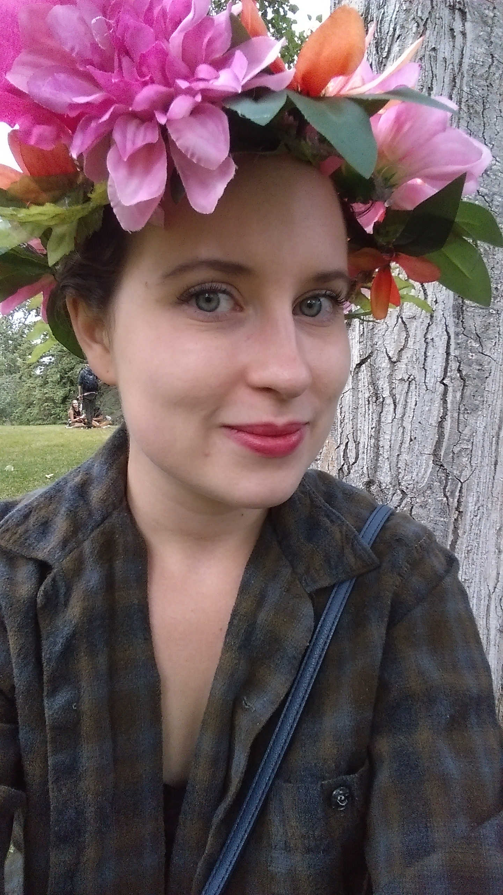

My Story
I come from a varied background and I have many different interests. My curiosity for science led me to study at the University of Calgary and earn a Bachelor of Science degree. After focusing on science for the first two years, I found that I missed doing creative work, as I grew up drawing, painting, and taking art classes. I decided to pursue a minor in art. This was the best decision I could have made, as it gave my program balance and revived a passion for creativity that I had lost for a while. I found a community within my printmaking courses. Sometimes I wished I had a full four years to spend in the art department, and I often found it difficult to bring together the two fields I enjoyed. I frequently explored these ideas in my printmaking and photography work.
Upon graduation I struggled to find work related to science due to the economic downturn. I noticed that the banking industry was still hiring at that time, and I knew many people who were successful in the industry, so I decided to shift my focus and apply to banking jobs. I worked for a few years in administrative jobs and was promoted to a more senior role in my branch. I enjoyed the problem-solving aspect of my job and being the branch detective, as it were, but ultimately I found that my passion was not in banking.
Ideally I wanted to do work that would combine my creative and analytical sides. I wanted to challenge my mind and solve problems, similar to my previous work. After a lot of time spent thinking, researching, attending meet-ups, and experimenting with coding tutorials, I decided to pursue web development. It seemed like the perfect combination of all my interests and skills, and I started to develop a passion for solving problems with code, and bringing designs to life with code. I attended the Web Developer program at SAIT to further my skills as a developer. There is still a lot to learn, but I am excited to continue learning new technologies and improving my skills.